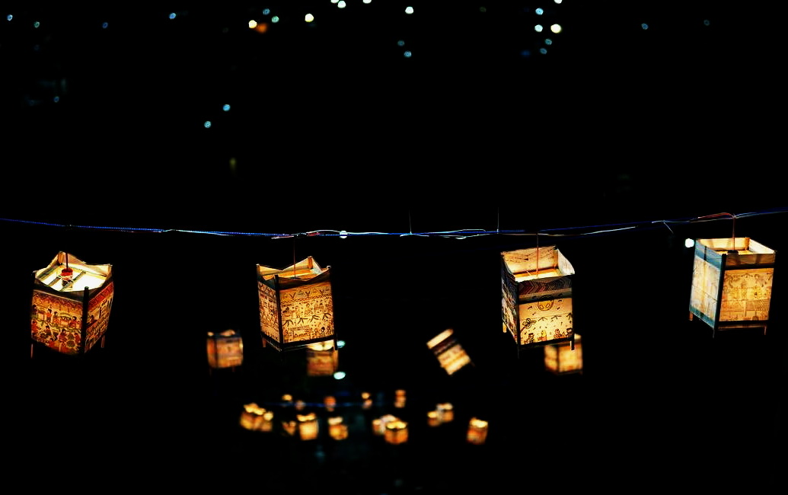
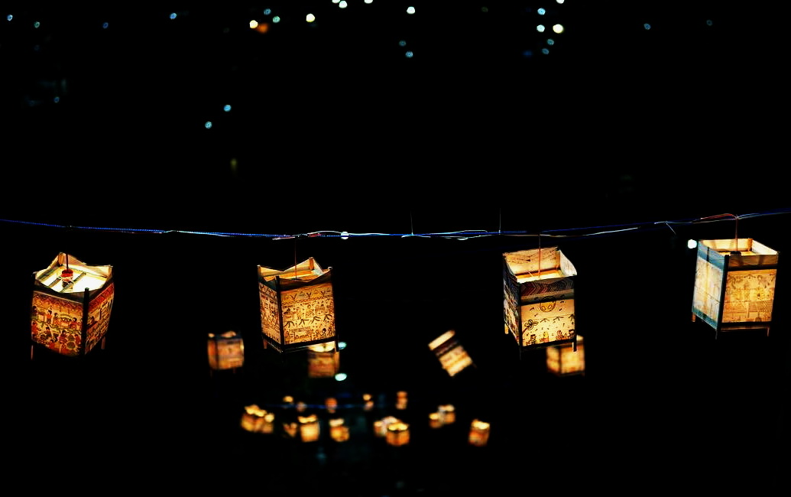

About Gresik
Gresik is known as a city of santri or islamic students and an industrial city.
It also boasts a cultural icon, the Damar Kurung, which is a hallmark of traditional art.
Gresik is known as a city of santri or islamic students and an industrial city.
It also boasts a cultural icon, the Damar Kurung, which is a hallmark of traditional art.
